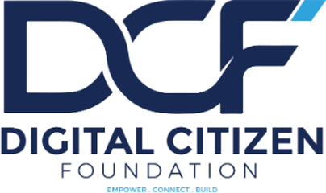

Bryan Kutlo Ramaphane
Botswana-based attorney, entrepreneur and researcher. Founder and Managing Partner of Ramaphane Law Group, working across law, international trade, investment and economic development.
Building things that outlast their founders
Ideas, made into institutions
Bryan Kutlo Ramaphane is a Botswana-based attorney, entrepreneur and researcher. He is the Founder and Managing Partner of Ramaphane Law Group, with professional interests spanning law, international trade, investment and economic development.
He holds an LLB from the University of Botswana, an MA in Politics and International Relations from the University of Botswana, and an LLM in International Trade and Investment Law in Africa from the University of Pretoria. He is currently pursuing a Doctor of Laws (LLD) at the University of Pretoria, with research interests in financial law, trade finance and access to finance for small and medium-sized enterprises.
Beyond his professional and academic pursuits, Bryan is passionate about community development, leadership and institution-building. He is the Founder of Mabogo Dinku Trust and a Trustee of the Digital Citizen Foundation and Emma Boko Trust. Through these engagements, he contributes to initiatives focused on education, youth development, community empowerment and social advancement.
His broader interests include international relations, public policy, African economic integration, philosophy, history and literature.
He is particularly interested in ideas that shape societies and, more importantly, in translating those ideas into institutions, initiatives and opportunities that make a lasting difference.
Law, commerce and the ground between them
Ramaphane Law Group is a corporate law firm advising clients on trade facilitation, commercial transactions and international business. Bryan founded the firm and leads it as Managing Partner.
Founder and Managing Partner, since November 2025. The law. Your power. Our purpose.
Visit the firm-
2021 to February 2025
Senior Attorney, Rahim Khan Attorneys
Contract and company law. Drafted, reviewed and negotiated commercial agreements, advised on corporate governance, mergers and acquisitions and compliance, and represented clients in contractual and commercial litigation.
-
February to May 2026
Tutor in Contract Law, University of Botswana
Taught contract law to undergraduates through the Centre for Continuing Education, setting and marking assessments and guiding students on legal reasoning.
What the firm does
Strategic legal work for the mining industry, covering prospecting and mining licences, licence transfers, shareholder agreements and foreign mining investments.
Business advisory across property, mergers and acquisitions, trust and estate administration, civil and commercial advisory, and contract review.
Labour law, criminal defence, debt collection, family law, workplace injuries, medical negligence, and property and estates.
A weekly column
Bryan has written a weekly column for The Business Weekly & Review since June 2023, on international relations, multilateralism and international trade. The aim is to inform public discourse on global governance, Africa's role in multilateral systems, and regional integration.
Service beyond the practice
Outside the practice, Bryan gives his time to civic and socio-economic rights work with a focus on young people.
-
Mabogo Dinku Trust
Founder, since January 2024
Leads civic and socio-economic rights initiatives with a focus on youth engagement, conducts policy research, and designs community-based leadership and advocacy training.
-

Digital Citizen Foundation
Trustee
Empower, connect, build.
-
Emma Boko Trust
Trustee
Education
-
Ongoing
Doctor of Laws
University of Pretoria
-
2025
Master of Laws, International Trade and Investment Law in Africa
University of Pretoria, with distinction
-
2025
Master of Arts, Politics and International Relations
University of Botswana, with distinction
-
2020
Bachelor of Laws
University of Botswana
Further training
-
Civic leadership, 2020
YALI Regional Leadership Center Southern Africa, hosted at the University of South Africa in Pretoria.
-
Botswana youth leadership training, 2024
Friedrich-Ebert-Stiftung
Short courses
-
Centre for Human RightsUniversity of Pretoria
The African human rights system; judicial enforcement of socio-economic rights; the right to development in Africa; women's rights in Africa; children's rights in Africa; sexual minority rights; civil society rights in Africa; policing and vulnerability in Africa; protection of forcibly displaced persons in Africa; accountability and oversight during COVID-19
-
Law Society of South Africa
Opinion writing; introduction to medical law
-
Law Society of Botswana
Trial advocacy
-
Association of ArbitratorsSouthern Africa
Powers and duties of arbitrators
-
LEX Center
Basic international criminal law; international law and state building
-
Global Campus of Human Rights
Children's rights in armed conflict
-
BADIL Resource Center
Inalienable rights of the Palestinian people